次元削減でデータを圧縮する¶
- 特徴抽出 (feature extraction)
- 特徴空間から、より次元の低い新しい部分特徴空間 (feature subspace)
を作成する
- PCA, LDA, カーネル主成分分析
5.1 主成分分析による教師なし次元削減¶
- 特徴抽出は、一般に、計算効率を改善するために使用される
- 主成分分析 (PCA)
- 分散が最大となる直交軸へ射影する
- サンプルベクトル: \(\boldsymbol{x} = [x_1, ..., x_d], \boldsymbol{x} \in \mathbb{R}\)
- 変換行列: \(\boldsymbol{W} \in \mathbb{R}^{d \times k}\)
- \(\boldsymbol{z} = \boldsymbol{xW} \in \mathbb{R}^{k}\)
- すべての特徴量に等しく重要度を割り当てる場合は、標準化が必要
5.1.1 共分散行列の固有対を求める¶
固有対を求めて、固有値降順に並べる
In [1]:
import pandas
df_wine = pandas.read_csv(
'https://archive.ics.uci.edu/ml/machine-learning-databases/wine/wine.data',
header=None)
df_wine
Out[1]:
| 0 | 1 | 2 | 3 | 4 | 5 | 6 | 7 | 8 | 9 | 10 | 11 | 12 | 13 | |
|---|---|---|---|---|---|---|---|---|---|---|---|---|---|---|
| 0 | 1 | 14.23 | 1.71 | 2.43 | 15.6 | 127 | 2.80 | 3.06 | 0.28 | 2.29 | 5.640000 | 1.04 | 3.92 | 1065 |
| 1 | 1 | 13.20 | 1.78 | 2.14 | 11.2 | 100 | 2.65 | 2.76 | 0.26 | 1.28 | 4.380000 | 1.05 | 3.40 | 1050 |
| 2 | 1 | 13.16 | 2.36 | 2.67 | 18.6 | 101 | 2.80 | 3.24 | 0.30 | 2.81 | 5.680000 | 1.03 | 3.17 | 1185 |
| 3 | 1 | 14.37 | 1.95 | 2.50 | 16.8 | 113 | 3.85 | 3.49 | 0.24 | 2.18 | 7.800000 | 0.86 | 3.45 | 1480 |
| 4 | 1 | 13.24 | 2.59 | 2.87 | 21.0 | 118 | 2.80 | 2.69 | 0.39 | 1.82 | 4.320000 | 1.04 | 2.93 | 735 |
| 5 | 1 | 14.20 | 1.76 | 2.45 | 15.2 | 112 | 3.27 | 3.39 | 0.34 | 1.97 | 6.750000 | 1.05 | 2.85 | 1450 |
| 6 | 1 | 14.39 | 1.87 | 2.45 | 14.6 | 96 | 2.50 | 2.52 | 0.30 | 1.98 | 5.250000 | 1.02 | 3.58 | 1290 |
| 7 | 1 | 14.06 | 2.15 | 2.61 | 17.6 | 121 | 2.60 | 2.51 | 0.31 | 1.25 | 5.050000 | 1.06 | 3.58 | 1295 |
| 8 | 1 | 14.83 | 1.64 | 2.17 | 14.0 | 97 | 2.80 | 2.98 | 0.29 | 1.98 | 5.200000 | 1.08 | 2.85 | 1045 |
| 9 | 1 | 13.86 | 1.35 | 2.27 | 16.0 | 98 | 2.98 | 3.15 | 0.22 | 1.85 | 7.220000 | 1.01 | 3.55 | 1045 |
| 10 | 1 | 14.10 | 2.16 | 2.30 | 18.0 | 105 | 2.95 | 3.32 | 0.22 | 2.38 | 5.750000 | 1.25 | 3.17 | 1510 |
| 11 | 1 | 14.12 | 1.48 | 2.32 | 16.8 | 95 | 2.20 | 2.43 | 0.26 | 1.57 | 5.000000 | 1.17 | 2.82 | 1280 |
| 12 | 1 | 13.75 | 1.73 | 2.41 | 16.0 | 89 | 2.60 | 2.76 | 0.29 | 1.81 | 5.600000 | 1.15 | 2.90 | 1320 |
| 13 | 1 | 14.75 | 1.73 | 2.39 | 11.4 | 91 | 3.10 | 3.69 | 0.43 | 2.81 | 5.400000 | 1.25 | 2.73 | 1150 |
| 14 | 1 | 14.38 | 1.87 | 2.38 | 12.0 | 102 | 3.30 | 3.64 | 0.29 | 2.96 | 7.500000 | 1.20 | 3.00 | 1547 |
| 15 | 1 | 13.63 | 1.81 | 2.70 | 17.2 | 112 | 2.85 | 2.91 | 0.30 | 1.46 | 7.300000 | 1.28 | 2.88 | 1310 |
| 16 | 1 | 14.30 | 1.92 | 2.72 | 20.0 | 120 | 2.80 | 3.14 | 0.33 | 1.97 | 6.200000 | 1.07 | 2.65 | 1280 |
| 17 | 1 | 13.83 | 1.57 | 2.62 | 20.0 | 115 | 2.95 | 3.40 | 0.40 | 1.72 | 6.600000 | 1.13 | 2.57 | 1130 |
| 18 | 1 | 14.19 | 1.59 | 2.48 | 16.5 | 108 | 3.30 | 3.93 | 0.32 | 1.86 | 8.700000 | 1.23 | 2.82 | 1680 |
| 19 | 1 | 13.64 | 3.10 | 2.56 | 15.2 | 116 | 2.70 | 3.03 | 0.17 | 1.66 | 5.100000 | 0.96 | 3.36 | 845 |
| 20 | 1 | 14.06 | 1.63 | 2.28 | 16.0 | 126 | 3.00 | 3.17 | 0.24 | 2.10 | 5.650000 | 1.09 | 3.71 | 780 |
| 21 | 1 | 12.93 | 3.80 | 2.65 | 18.6 | 102 | 2.41 | 2.41 | 0.25 | 1.98 | 4.500000 | 1.03 | 3.52 | 770 |
| 22 | 1 | 13.71 | 1.86 | 2.36 | 16.6 | 101 | 2.61 | 2.88 | 0.27 | 1.69 | 3.800000 | 1.11 | 4.00 | 1035 |
| 23 | 1 | 12.85 | 1.60 | 2.52 | 17.8 | 95 | 2.48 | 2.37 | 0.26 | 1.46 | 3.930000 | 1.09 | 3.63 | 1015 |
| 24 | 1 | 13.50 | 1.81 | 2.61 | 20.0 | 96 | 2.53 | 2.61 | 0.28 | 1.66 | 3.520000 | 1.12 | 3.82 | 845 |
| 25 | 1 | 13.05 | 2.05 | 3.22 | 25.0 | 124 | 2.63 | 2.68 | 0.47 | 1.92 | 3.580000 | 1.13 | 3.20 | 830 |
| 26 | 1 | 13.39 | 1.77 | 2.62 | 16.1 | 93 | 2.85 | 2.94 | 0.34 | 1.45 | 4.800000 | 0.92 | 3.22 | 1195 |
| 27 | 1 | 13.30 | 1.72 | 2.14 | 17.0 | 94 | 2.40 | 2.19 | 0.27 | 1.35 | 3.950000 | 1.02 | 2.77 | 1285 |
| 28 | 1 | 13.87 | 1.90 | 2.80 | 19.4 | 107 | 2.95 | 2.97 | 0.37 | 1.76 | 4.500000 | 1.25 | 3.40 | 915 |
| 29 | 1 | 14.02 | 1.68 | 2.21 | 16.0 | 96 | 2.65 | 2.33 | 0.26 | 1.98 | 4.700000 | 1.04 | 3.59 | 1035 |
| ... | ... | ... | ... | ... | ... | ... | ... | ... | ... | ... | ... | ... | ... | ... |
| 148 | 3 | 13.32 | 3.24 | 2.38 | 21.5 | 92 | 1.93 | 0.76 | 0.45 | 1.25 | 8.420000 | 0.55 | 1.62 | 650 |
| 149 | 3 | 13.08 | 3.90 | 2.36 | 21.5 | 113 | 1.41 | 1.39 | 0.34 | 1.14 | 9.400000 | 0.57 | 1.33 | 550 |
| 150 | 3 | 13.50 | 3.12 | 2.62 | 24.0 | 123 | 1.40 | 1.57 | 0.22 | 1.25 | 8.600000 | 0.59 | 1.30 | 500 |
| 151 | 3 | 12.79 | 2.67 | 2.48 | 22.0 | 112 | 1.48 | 1.36 | 0.24 | 1.26 | 10.800000 | 0.48 | 1.47 | 480 |
| 152 | 3 | 13.11 | 1.90 | 2.75 | 25.5 | 116 | 2.20 | 1.28 | 0.26 | 1.56 | 7.100000 | 0.61 | 1.33 | 425 |
| 153 | 3 | 13.23 | 3.30 | 2.28 | 18.5 | 98 | 1.80 | 0.83 | 0.61 | 1.87 | 10.520000 | 0.56 | 1.51 | 675 |
| 154 | 3 | 12.58 | 1.29 | 2.10 | 20.0 | 103 | 1.48 | 0.58 | 0.53 | 1.40 | 7.600000 | 0.58 | 1.55 | 640 |
| 155 | 3 | 13.17 | 5.19 | 2.32 | 22.0 | 93 | 1.74 | 0.63 | 0.61 | 1.55 | 7.900000 | 0.60 | 1.48 | 725 |
| 156 | 3 | 13.84 | 4.12 | 2.38 | 19.5 | 89 | 1.80 | 0.83 | 0.48 | 1.56 | 9.010000 | 0.57 | 1.64 | 480 |
| 157 | 3 | 12.45 | 3.03 | 2.64 | 27.0 | 97 | 1.90 | 0.58 | 0.63 | 1.14 | 7.500000 | 0.67 | 1.73 | 880 |
| 158 | 3 | 14.34 | 1.68 | 2.70 | 25.0 | 98 | 2.80 | 1.31 | 0.53 | 2.70 | 13.000000 | 0.57 | 1.96 | 660 |
| 159 | 3 | 13.48 | 1.67 | 2.64 | 22.5 | 89 | 2.60 | 1.10 | 0.52 | 2.29 | 11.750000 | 0.57 | 1.78 | 620 |
| 160 | 3 | 12.36 | 3.83 | 2.38 | 21.0 | 88 | 2.30 | 0.92 | 0.50 | 1.04 | 7.650000 | 0.56 | 1.58 | 520 |
| 161 | 3 | 13.69 | 3.26 | 2.54 | 20.0 | 107 | 1.83 | 0.56 | 0.50 | 0.80 | 5.880000 | 0.96 | 1.82 | 680 |
| 162 | 3 | 12.85 | 3.27 | 2.58 | 22.0 | 106 | 1.65 | 0.60 | 0.60 | 0.96 | 5.580000 | 0.87 | 2.11 | 570 |
| 163 | 3 | 12.96 | 3.45 | 2.35 | 18.5 | 106 | 1.39 | 0.70 | 0.40 | 0.94 | 5.280000 | 0.68 | 1.75 | 675 |
| 164 | 3 | 13.78 | 2.76 | 2.30 | 22.0 | 90 | 1.35 | 0.68 | 0.41 | 1.03 | 9.580000 | 0.70 | 1.68 | 615 |
| 165 | 3 | 13.73 | 4.36 | 2.26 | 22.5 | 88 | 1.28 | 0.47 | 0.52 | 1.15 | 6.620000 | 0.78 | 1.75 | 520 |
| 166 | 3 | 13.45 | 3.70 | 2.60 | 23.0 | 111 | 1.70 | 0.92 | 0.43 | 1.46 | 10.680000 | 0.85 | 1.56 | 695 |
| 167 | 3 | 12.82 | 3.37 | 2.30 | 19.5 | 88 | 1.48 | 0.66 | 0.40 | 0.97 | 10.260000 | 0.72 | 1.75 | 685 |
| 168 | 3 | 13.58 | 2.58 | 2.69 | 24.5 | 105 | 1.55 | 0.84 | 0.39 | 1.54 | 8.660000 | 0.74 | 1.80 | 750 |
| 169 | 3 | 13.40 | 4.60 | 2.86 | 25.0 | 112 | 1.98 | 0.96 | 0.27 | 1.11 | 8.500000 | 0.67 | 1.92 | 630 |
| 170 | 3 | 12.20 | 3.03 | 2.32 | 19.0 | 96 | 1.25 | 0.49 | 0.40 | 0.73 | 5.500000 | 0.66 | 1.83 | 510 |
| 171 | 3 | 12.77 | 2.39 | 2.28 | 19.5 | 86 | 1.39 | 0.51 | 0.48 | 0.64 | 9.899999 | 0.57 | 1.63 | 470 |
| 172 | 3 | 14.16 | 2.51 | 2.48 | 20.0 | 91 | 1.68 | 0.70 | 0.44 | 1.24 | 9.700000 | 0.62 | 1.71 | 660 |
| 173 | 3 | 13.71 | 5.65 | 2.45 | 20.5 | 95 | 1.68 | 0.61 | 0.52 | 1.06 | 7.700000 | 0.64 | 1.74 | 740 |
| 174 | 3 | 13.40 | 3.91 | 2.48 | 23.0 | 102 | 1.80 | 0.75 | 0.43 | 1.41 | 7.300000 | 0.70 | 1.56 | 750 |
| 175 | 3 | 13.27 | 4.28 | 2.26 | 20.0 | 120 | 1.59 | 0.69 | 0.43 | 1.35 | 10.200000 | 0.59 | 1.56 | 835 |
| 176 | 3 | 13.17 | 2.59 | 2.37 | 20.0 | 120 | 1.65 | 0.68 | 0.53 | 1.46 | 9.300000 | 0.60 | 1.62 | 840 |
| 177 | 3 | 14.13 | 4.10 | 2.74 | 24.5 | 96 | 2.05 | 0.76 | 0.56 | 1.35 | 9.200000 | 0.61 | 1.60 | 560 |
178 rows × 14 columns
In [2]:
from sklearn.model_selection import train_test_split
from sklearn.preprocessing import StandardScaler
X, y = df_wine.iloc[:, 1:].values, df_wine.iloc[:, 0].values
X_train, X_test, y_train, y_test = train_test_split(
X, y, test_size=0.3, random_state=0)
sc = StandardScaler()
X_train_std = sc.fit_transform(X_train)
X_test_std = sc.transform(X_test)
In [3]:
import numpy
cov_mat = numpy.cov(X_train_std.T)
eigen_vals, eigen_vecs = numpy.linalg.eig(cov_mat)
eigen_vecs
Out[3]:
array([[ 1.46698114e-01, 5.04170789e-01, -1.17235150e-01,
2.06254611e-01, -1.87815947e-01, -1.48851318e-01,
-1.79263662e-01, -5.54687162e-02, -4.03054922e-01,
-4.17197583e-01, 2.75660860e-01, 4.03567189e-01,
4.13320786e-04],
[ -2.42245536e-01, 2.42168894e-01, 1.49946576e-01,
1.30489298e-01, 5.68639776e-01, -2.69052764e-01,
-5.92636731e-01, 3.32731614e-02, -1.01833706e-01,
2.17101488e-01, -8.13845005e-02, -1.52474999e-01,
-8.78560762e-02],
[ -2.99344215e-02, 2.86984836e-01, 6.56394387e-01,
1.51536318e-02, -2.99209426e-01, -9.33386061e-02,
6.07334578e-02, -1.00618575e-01, 3.51841423e-01,
1.28549846e-01, -1.29751275e-02, 1.68376064e-01,
-4.52518598e-01],
[ -2.55190023e-01, -6.46871827e-02, 5.84282337e-01,
-9.04220851e-02, -4.12499478e-02, -1.01342392e-01,
2.50323869e-01, 5.61658566e-02, -5.00457282e-01,
4.73344124e-02, 9.89088030e-02, -6.70902927e-02,
4.86169765e-01],
[ 1.20797723e-01, 2.29953850e-01, 8.22627466e-02,
-8.39128346e-01, -2.71971315e-02, 1.12567350e-01,
-2.85240559e-01, 9.58423947e-02, 8.37391743e-02,
-2.78918776e-01, -9.59297663e-02, -1.02396856e-01,
1.14764951e-01],
[ 3.89344551e-01, 9.36399132e-02, 1.80804417e-01,
1.93179478e-01, 1.40645426e-01, 1.22248798e-02,
5.31455344e-02, -4.21265116e-01, 1.35111456e-01,
-2.80985650e-01, 2.83897644e-01, -6.18600153e-01,
9.45645138e-02],
[ 4.23264856e-01, 1.08862204e-02, 1.42959330e-01,
1.40459548e-01, 9.26866486e-02, -5.50345182e-02,
7.98994076e-02, 8.47224703e-01, 3.36016514e-03,
-3.91442963e-02, 1.16729207e-01, -1.39680277e-01,
-1.00444099e-01],
[ -3.06349555e-01, 1.87021637e-02, 1.72234753e-01,
3.37332618e-01, -8.58416771e-02, 6.95340883e-01,
-2.97371718e-01, 1.66256803e-01, 1.90120758e-01,
-2.78622194e-01, -3.96566280e-02, 1.63323514e-03,
2.00128778e-01],
[ 3.05722194e-01, 3.04035180e-02, 1.58362102e-01,
-1.14752900e-01, 5.65105241e-01, 4.98354410e-01,
2.02519133e-01, -1.66197468e-01, -1.76029939e-01,
1.48539457e-01, 8.60602743e-02, 3.88568490e-01,
-1.39942067e-01],
[ -9.86919131e-02, 5.45270809e-01, -1.42421708e-01,
7.87857057e-02, 1.32346052e-02, 1.59452160e-01,
3.97364107e-01, 3.96173606e-02, -2.14930670e-01,
-4.10240865e-03, -5.71651893e-01, -3.08345904e-01,
-1.15349466e-01],
[ 3.00325353e-01, -2.79243218e-01, 9.32387182e-02,
2.41740256e-02, -3.72610811e-01, 2.16515349e-01,
-3.84654748e-01, -1.05383688e-01, -5.17259438e-01,
1.97814118e-01, -1.98844532e-01, -2.00456386e-01,
-3.02254353e-01],
[ 3.68211538e-01, -1.74365000e-01, 1.96077407e-01,
1.84028641e-01, 8.93796748e-02, -2.35172361e-01,
-8.62903341e-02, -9.95055559e-02, 1.36456039e-01,
-2.38138151e-01, -6.50869713e-01, 2.84100327e-01,
3.18414303e-01],
[ 2.92597130e-01, 3.63154608e-01, -9.73171134e-02,
5.67677845e-02, -2.17529485e-01, 1.05621383e-01,
-1.30298291e-01, -1.60661776e-02, 1.67758429e-01,
6.37350206e-01, 7.12377082e-02, 3.75546771e-02,
5.03247839e-01]])
In [4]:
tot = sum(eigen_vals)
var_exp = [(i / tot) for i in sorted(eigen_vals, reverse=True)]
cum_var_exp = numpy.cumsum(var_exp)
In [5]:
from matplotlib import pyplot
pyplot.bar(range(1,14), var_exp, alpha=0.5, align='center',
label='individual explained variance')
pyplot.step(range(1,14), cum_var_exp, where='mid',
label='cumulative explained variance')
pyplot.ylabel('Explained variance ratio')
pyplot.xlabel('Principal components')
pyplot.legend(loc='best')
pyplot.show()
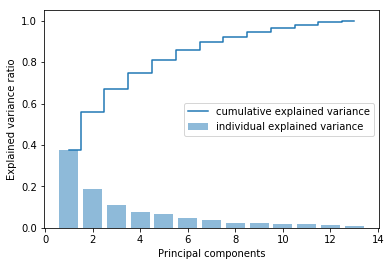
5.1.2 特徴変換¶
Wine データセットを主成分軸に変換する
In [6]:
eigen_pairs = [
(numpy.abs(eigen_vals[i]), eigen_vecs[:,i])
for i in range(len(eigen_vals))
]
eigen_pairs.sort(key=lambda k: k[0], reverse=True)
第 1, 2 主成分で分散の約 60 % を占めるため、今回はこの 2 主成分のみ用いて変換行列 \(\boldsymbol{W}\) を作る
In [7]:
w = numpy.hstack((eigen_pairs[0][1][:, numpy.newaxis], eigen_pairs[1][1][:, numpy.newaxis]))
In [8]:
X_train_std[0].dot(w)
Out[8]:
array([ 2.59891628, 0.00484089])
In [9]:
X_train_std[0]
Out[9]:
array([ 0.91083058, -0.46259897, -0.01142613, -0.82067872, 0.06241693,
0.58820446, 0.93565436, -0.7619138 , 0.13007174, -0.51238741,
0.65706596, 1.94354495, 0.93700997])
In [10]:
X_train_pca = X_train_std.dot(w)
In [11]:
colors = ['r', 'b', 'g']
markers = ['s', 'x', 'o']
for l, c, m in zip(numpy.unique(y_train), colors, markers):
pyplot.scatter(
X_train_pca[y_train==l, 0], X_train_pca[y_train==l, 1],
c=c, label=l, marker=m
)
pyplot.xlabel('PC 1')
pyplot.ylabel('PC 2')
pyplot.legend(loc='lower left')
pyplot.show()
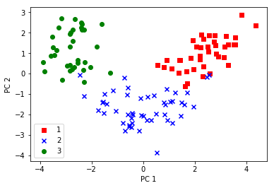
5.1.3 scikit-learn の主成分分析¶
scikit-learn の PCA クラスを用いて特徴抽出したのち、ロジスティクス回帰でサンプルを分類する
In [12]:
from matplotlib.colors import ListedColormap
def plot_decision_regions(X, y, classifier, resolution=0.02):
markers = ('s', 'x', 'o', '^', 'v')
colors = ('red', 'blue', 'lightgreen', 'gray', 'cyan')
cmap = ListedColormap(colors[:len(numpy.unique(y))])
x1_min, x1_max = X[:, 0].min() - 1, X[:, 0].max() + 1
x2_min, x2_max = X[:, 1].min() - 1, X[:, 1].max() + 1
xx1, xx2 = numpy.meshgrid(numpy.arange(x1_min, x1_max, resolution),
numpy.arange(x2_min, x2_max, resolution))
Z = classifier.predict(numpy.array([xx1.ravel(), xx2.ravel()]).T)
Z = Z.reshape(xx1.shape)
pyplot.contourf(xx1, xx2, Z, alpha=0.4, cmap=cmap)
pyplot.xlim(xx1.min(), xx1.max())
pyplot.ylim(xx2.min(), xx2.max())
for idx, cl in enumerate(numpy.unique(y)):
pyplot.scatter(
x=X[y == cl, 0],
y=X[y == cl, 1],
alpha=0.8, c=cmap(idx),
marker=markers[idx],
label=cl
)
In [13]:
from sklearn.linear_model import LogisticRegression
from sklearn.decomposition import PCA
pca = PCA(n_components=2)
lr = LogisticRegression()
X_train_pca = pca.fit_transform(X_train_std)
X_test_pca = pca.transform(X_test_std)
lr.fit(X_train_pca, y_train)
Out[13]:
LogisticRegression(C=1.0, class_weight=None, dual=False, fit_intercept=True,
intercept_scaling=1, max_iter=100, multi_class='ovr', n_jobs=1,
penalty='l2', random_state=None, solver='liblinear', tol=0.0001,
verbose=0, warm_start=False)
In [14]:
plot_decision_regions(X_train_pca, y_train, classifier=lr)
pyplot.xlabel('PC1')
pyplot.ylabel('PC2')
pyplot.legend(loc='lower left')
pyplot.show()
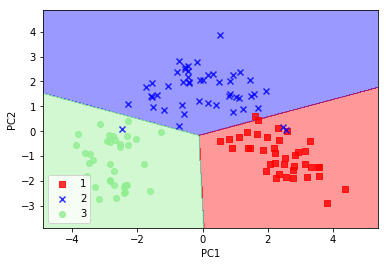
In [15]:
plot_decision_regions(X_test_pca, y_test, classifier=lr)
pyplot.xlabel('PC1')
pyplot.ylabel('PC2')
pyplot.legend(loc='lower left')
pyplot.show()
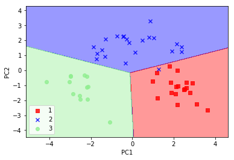
5.2 線形判別分析による教師ありデータ圧縮¶
- 線形判別分析 (Linear Discriminant Analysis:LDA)
- 特徴抽出手法のひとつ
- 分離を最適化する特徴部分空間を探す
- 教師あり
- 正規分布が仮定される
- サンプル間が独立であることが仮定される
5.2.1 変動行列を計算する¶
- 変動行列: \(\boldsymbol{S_i} = \sum_{x\in D_i}(\boldsymbol{x} - \boldsymbol{m}_i)(\boldsymbol{x} - \boldsymbol{m}_i)^T\)
- 正規化された変動行列: \(\boldsymbol{\Sigma}_i = \frac{1}{N_i}\boldsymbol{S_i} = \frac{1}{N_i}\sum_{x\in D_i}(\boldsymbol{x} - \boldsymbol{m}_i)(\boldsymbol{x} - \boldsymbol{m}_i)^T\)
- クラス内変動行列: \(\boldsymbol{S}_W = \sum_i^c\boldsymbol{S_i}\)
- 全クラスの平均: \(\boldsymbol{m}\)
- クラス間変動行列: \(\boldsymbol{S}_B = \sum_{i}^{c}N_i(\boldsymbol{m}_i - \boldsymbol{m})(\boldsymbol{m}_i - \boldsymbol{m})^T\)
- クラス \(i\) の平均ベクトル \(\boldsymbol{m}_i = \frac{1}{n_i}\sum_{\boldsymbol{x}\in D_i}\boldsymbol{x}\)
In [16]:
numpy.set_printoptions(precision=4)
mean_vecs = [
numpy.mean(X_train_std[y_train==label], axis=0)
for label in range(1,4)]
mean_vecs
Out[16]:
[array([ 0.9259, -0.3091, 0.2592, -0.7989, 0.3039, 0.9608, 1.0515,
-0.6306, 0.5354, 0.2209, 0.4855, 0.798 , 1.2017]),
array([-0.8727, -0.3854, -0.4437, 0.2481, -0.2409, -0.1059, 0.0187,
-0.0164, 0.1095, -0.8796, 0.4392, 0.2776, -0.7016]),
array([ 0.1637, 0.8929, 0.3249, 0.5658, -0.01 , -0.9499, -1.228 ,
0.7436, -0.7652, 0.979 , -1.1698, -1.3007, -0.3912])]
In [17]:
d = 13
S_W = numpy.zeros((d, d))
for label, mv in zip(range(1, 4), mean_vecs):
class_scatter = numpy.zeros((d, d))
for row in X_train_std[y_train==label]:
row, mv = row.reshape(d, 1), mv.reshape(d, 1)
class_scatter += (row - mv).dot((row - mv).T)
S_W += class_scatter
print('Within-class scatter matrix: %sx%s' % (S_W.shape[0], S_W.shape[1]))
Within-class scatter matrix: 13x13
In [18]:
print('Class label distribution: %s' % numpy.bincount(y_train)[1:])
Class label distribution: [40 49 35]
In [19]:
d = 13
S_W = numpy.zeros((d, d))
for label, mv in zip(range(1, 4), mean_vecs):
class_scatter = numpy.cov(X_train_std[y_train==label].T)
S_W += class_scatter
print('Within-class scatter matrix: %sx%s' % (S_W.shape[0], S_W.shape[1]))
Within-class scatter matrix: 13x13
In [20]:
mean_overall = numpy.mean(X_train_std, axis=0)
d = 13
S_B = numpy.zeros((d, d))
for i, mean_vec in enumerate(mean_vecs):
n = X_train[y_train==(i + 1), :].shape[0]
mean_vec = mean_vec.reshape(d, 1)
mean_overall = mean_overall.reshape(d, 1)
S_B += n * (mean_vec - mean_overall).dot((mean_vec - mean_overall).T)
print('Between-class scatter matrix: %sx%s' % (S_B.shape[0], S_B.shape[1]))
Between-class scatter matrix: 13x13
5.2.2 新しい特徴部分空間の線形判別を選択する¶
\(\boldsymbol{S}^{-1}_{W}\boldsymbol{S}_{B}\) の一般化固有値問題を解く
In [21]:
eigen_vals, eigen_vecs = numpy.linalg.eig(numpy.linalg.inv(S_W).dot(S_B))
In [22]:
eigen_pairs = [
(numpy.abs(eigen_vals[i]), eigen_vecs[:, i])
for i in range(len(eigen_vals))
]
eigen_pairs = sorted(eigen_pairs, key=lambda k: k[0], reverse=True)
print('Eigenvalues in decreasing order:\n')
for eigen_val in eigen_pairs:
print(eigen_val[0])
Eigenvalues in decreasing order:
452.721581245
156.43636122
4.56868837544e-14
4.21061051419e-14
2.70653038509e-14
2.52412403707e-14
2.52412403707e-14
2.41582347751e-14
1.46862694151e-14
1.46862694151e-14
3.90670799708e-15
9.97300040939e-16
0.0
In [23]:
tot = sum(eigen_vals.real)
discr = [(i / tot) for i in sorted(eigen_vals.real, reverse=True)]
cum_discr = numpy.cumsum(discr)
pyplot.bar(
range(1, 14), discr, alpha=0.5, align='center',
label='individual "discriminability"'
)
pyplot.step(
range(1, 14), cum_discr, where='mid',
label='cumulative "discriminability"'
)
pyplot.ylabel('"discriminability" ratio')
pyplot.xlabel('Linear Discriminants')
pyplot.ylim([-0.1, 1.1])
pyplot.legend(loc='best')
pyplot.show()
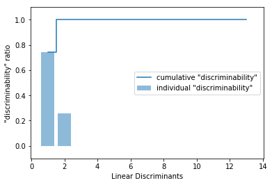
In [24]:
w = numpy.hstack(
(eigen_pairs[0][1][:, numpy.newaxis].real,
eigen_pairs[1][1][:, numpy.newaxis].real))
w
Out[24]:
array([[-0.0662, -0.3797],
[ 0.0386, -0.2206],
[-0.0217, -0.3816],
[ 0.184 , 0.3018],
[-0.0034, 0.0141],
[ 0.2326, 0.0234],
[-0.7747, 0.1869],
[-0.0811, 0.0696],
[ 0.0875, 0.1796],
[ 0.185 , -0.284 ],
[-0.066 , 0.2349],
[-0.3805, 0.073 ],
[-0.3285, -0.5971]])
5.2.3 新しい特徴空間にサンプルを射影する¶
- 新しい特徴空間 \(\boldsymbol{X'} = \boldsymbol{XW}\)
In [25]:
X_train_lda = X_train_std.dot(w)
colors = ['r', 'b', 'g']
makers = ['s', 'x', 'o']
for l, c, m in zip(numpy.unique(y_train), colors, makers):
pyplot.scatter(
X_train_lda[y_train==l, 0] * (-1),
X_train_lda[y_train==l, 1] * (-1),
c=c,
label=l,
marker=m
)
pyplot.xlabel('LD 1')
pyplot.ylabel('LD 2')
pyplot.legend(loc='lower right')
pyplot.show()
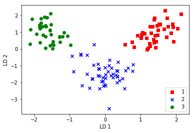
5.2.4 scikit-learn によるLDA¶
In [26]:
from sklearn.discriminant_analysis import LinearDiscriminantAnalysis as LDA
from sklearn.linear_model import LogisticRegression
lda = LDA(n_components=2)
X_train_lda = lda.fit_transform(X_train_std, y_train)
lr = LogisticRegression()
lr = lr.fit(X_train_lda, y_train)
plot_decision_regions(X_train_lda, y_train, classifier=lr)
pyplot.xlabel('LD 1')
pyplot.ylabel('LD 2')
pyplot.legend(loc='lower left')
pyplot.show()
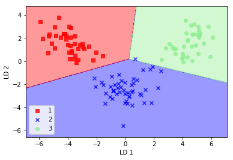
In [27]:
X_test_lda = lda.transform(X_test_std)
plot_decision_regions(X_test_lda, y_test, classifier=lr)
pyplot.xlabel('LD 1')
pyplot.ylabel('LD 2')
pyplot.legend(loc='lower left')
pyplot.show()
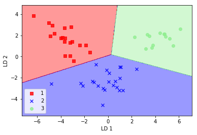
5.3 カーネル主成分分析を使った非線形写像¶
- 線形分離不可能な場合は、 PCA や LDA は次元削減手法として、適切ではない可能性がある
- カーネル PCA
5.3.2 Python でカーネル主成分分析を実装する¶
In [28]:
from scipy.spatial.distance import pdist, squareform
from scipy import exp
from scipy.linalg import eigh
import numpy
def rbf_kernel_pca(X, gamma, n_components):
sq_dest = pdist(X, 'sqeuclidean')
mat_sq_dists = squareform(sq_dest)
K = exp(-1 * gamma * mat_sq_dists)
N = K.shape[0]
one_n = numpy.ones((N, N)) /N
K = K - one_n - K.dot(one_n) + one_n.dot(K).dot(one_n)
eigvals, eigvecs = eigh(K)
return numpy.column_stack((
eigvecs[:, -1]
for i in range(1, n_components + 1)
))
In [29]:
from sklearn.datasets import make_moons
X, y = make_moons(n_samples=100, random_state=123)
pyplot.scatter(X[y==0, 0], X[y==0, 1], color='red', marker='^', alpha=0.5)
pyplot.scatter(X[y==1, 0], X[y==1, 1], color='blue', marker='o', alpha=0.5)
pyplot.show()
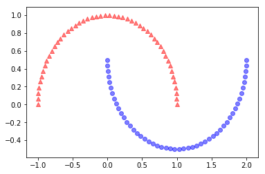
In [30]:
from sklearn.decomposition import PCA
scikit_pca = PCA(n_components=2)
X_spca = scikit_pca.fit_transform(X)
fig, ax = pyplot.subplots(nrows=1,ncols=2, figsize=(7,3))
ax[0].scatter(
X_spca[y==0, 0], X_spca[y==0, 1],
color='red', marker='^', alpha=0.5)
ax[0].scatter(
X_spca[y==1, 0], X_spca[y==1, 1],
color='blue', marker='o', alpha=0.5)
ax[1].scatter(
X_spca[y==0, 0], numpy.zeros((50, 1)) + 0.02,
color='red', marker='^', alpha=0.5)
ax[1].scatter(
X_spca[y==1, 0], numpy.zeros((50,1))-0.02,
color='blue', marker='o', alpha=0.5)
ax[0].set_xlabel('PC1')
ax[0].set_ylabel('PC2')
ax[1].set_ylim([-1, 1])
ax[1].set_yticks([])
ax[1].set_xlabel('PC1')
pyplot.show()
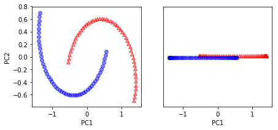
In [31]:
from matplotlib.ticker import FormatStrFormatter
X_kpca = rbf_kernel_pca(X, gamma=15, n_components=2)
fig, ax = pyplot.subplots(nrows=1,ncols=2, figsize=(7,3))
ax[0].scatter(
X_kpca[y==0, 0], X_kpca[y==0, 1],
color='red', marker='^', alpha=0.5)
ax[0].scatter(
X_kpca[y==1, 0], X_kpca[y==1, 1],
color='blue', marker='o', alpha=0.5)
ax[1].scatter(
X_kpca[y==0, 0], numpy.zeros((50, 1)) + 0.02,
color='red', marker='^', alpha=0.5)
ax[1].scatter(
X_kpca[y==1, 0], numpy.zeros((50, 1)) - 0.02,
color='blue', marker='o', alpha=0.5)
ax[0].set_xlabel('PC1')
ax[0].set_ylabel('PC2')
ax[1].set_ylim([-1, 1])
ax[1].set_yticks([])
ax[1].set_xlabel('PC1')
ax[0].xaxis.set_major_formatter(FormatStrFormatter('%0.1f'))
ax[1].xaxis.set_major_formatter(FormatStrFormatter('%0.1f'))
pyplot.show()
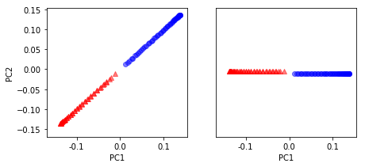
In [32]:
from sklearn.datasets import make_circles
X, y = make_circles(n_samples=1000, random_state=123, noise=0.1, factor=0.2)
pyplot.scatter(X[y==0, 0], X[y==0, 1], color='red', marker='^', alpha=0.5)
pyplot.scatter(X[y==1, 0], X[y==1, 1], color='blue', marker='o', alpha=0.5)
pyplot.show()
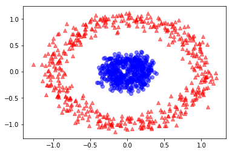
In [33]:
scikit_pca = PCA(n_components=2)
X_spca = scikit_pca.fit_transform(X)
fig, ax = pyplot.subplots(nrows=1,ncols=2, figsize=(7,3))
ax[0].scatter(
X_spca[y==0, 0], X_spca[y==0, 1],
color='red', marker='^', alpha=0.5)
ax[0].scatter(
X_spca[y==1, 0], X_spca[y==1, 1],
color='blue', marker='o', alpha=0.5)
ax[1].scatter(
X_spca[y==0, 0], numpy.zeros((500, 1)) + 0.02,
color='red', marker='^', alpha=0.5)
ax[1].scatter(
X_spca[y==1, 0], numpy.zeros((500, 1)) - 0.02,
color='blue', marker='o', alpha=0.5)
ax[0].set_xlabel('PC1')
ax[0].set_ylabel('PC2')
ax[1].set_ylim([-1, 1])
ax[1].set_yticks([])
ax[1].set_xlabel('PC1')
pyplot.show()
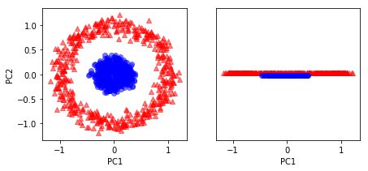
In [34]:
X_kpca = rbf_kernel_pca(X, gamma=15, n_components=2)
fig, ax = pyplot.subplots(nrows=1,ncols=2, figsize=(7,3))
ax[0].scatter(
X_kpca[y==0, 0], X_kpca[y==0, 1],
color='red', marker='^', alpha=0.5)
ax[0].scatter(
X_kpca[y==1, 0], X_kpca[y==1, 1],
color='blue', marker='o', alpha=0.5)
ax[1].scatter(
X_kpca[y==0, 0], numpy.zeros((500, 1)) + 0.02,
color='red', marker='^', alpha=0.5)
ax[1].scatter(
X_kpca[y==1, 0], numpy.zeros((500, 1)) - 0.02,
color='blue', marker='o', alpha=0.5)
ax[0].set_xlabel('PC1')
ax[0].set_ylabel('PC2')
ax[1].set_ylim([-1, 1])
ax[1].set_yticks([])
ax[1].set_xlabel('PC1')
pyplot.show()
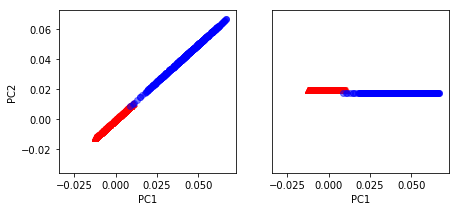
5.3.3 新しいデータ点を射影する¶
In [35]:
from scipy.spatial.distance import pdist, squareform
from scipy import exp
from scipy.linalg import eigh
import numpy
def rbf_kernel_pca(X, gamma, n_components):
sq_dists = pdist(X, 'sqeuclidean')
mat_sq_dists = squareform(sq_dists)
K = exp(-1 * gamma * mat_sq_dists)
N = K.shape[0]
one_n = numpy.ones((N, N)) / N
K = K - one_n.dot(K) - K.dot(one_n) + one_n.dot(K).dot(one_n)
eigvals, eigvecs = eigh(K)
alphas = numpy.column_stack((
eigvecs[:, -1 * i]
for i in range(1, n_components + 1)
))
lambdas = [eigvals[-1 * i] for i in range(1, n_components + 1)]
return alphas, lambdas
In [36]:
X, y = make_moons(n_samples=100, random_state=123)
alphas, lambdas = rbf_kernel_pca(X, gamma=15, n_components=1)
In [37]:
x_new = X[25]
x_new
Out[37]:
array([ 1.8713, 0.0093])
In [38]:
x_proj = alphas[25]
x_proj
Out[38]:
array([ 0.0788])
In [39]:
def project_x(x_new, X, gamma, alphas, lambdas):
pair_dist = numpy.array([
numpy.sum((x_new - row) ** 2)
for row in X
])
k = numpy.exp(-1 * gamma * pair_dist)
return k.dot(alphas / lambdas)
In [40]:
x_reproj = project_x(x_new, X, gamma=15, alphas=alphas, lambdas=lambdas)
x_reproj
Out[40]:
array([ 0.0788])
In [41]:
pyplot.scatter(
alphas[y==0, 0],
numpy.zeros((50)),
color='red',
marker='^',
alpha=0.5
)
pyplot.scatter(
alphas[y==1, 0],
numpy.zeros((50)),
color='blue',
marker='o',
alpha=0.5
)
pyplot.scatter(
x_proj,
0,
color='black',
label='original projection of point X[25]',
marker='^',
s=100
)
pyplot.scatter(
x_reproj,
0,
color='green',
label='remapped point X[25]',
marker='x',
s=500
)
pyplot.legend(scatterpoints=1)
pyplot.show()
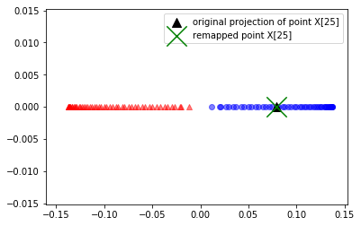
5.3.4 scikit-learn のカーネル主成分分析¶
In [42]:
from sklearn.decomposition import KernelPCA
X, y = make_moons(n_samples=100, random_state=123)
scikit_kpca = KernelPCA(n_components=2, kernel='rbf', gamma=15)
X_skernpca = scikit_kpca.fit_transform(X)
In [43]:
pyplot.scatter(
X_skernpca[y==0, 0],
X_skernpca[y==0, 1],
color='red',
marker='^',
alpha=0.5
)
pyplot.scatter(
X_skernpca[y==1, 0],
X_skernpca[y==1, 1],
color='blue',
marker='o',
alpha=0.5
)
pyplot.xlabel('PC1')
pyplot.ylabel('PC2')
pyplot.show()
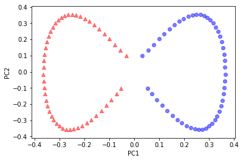